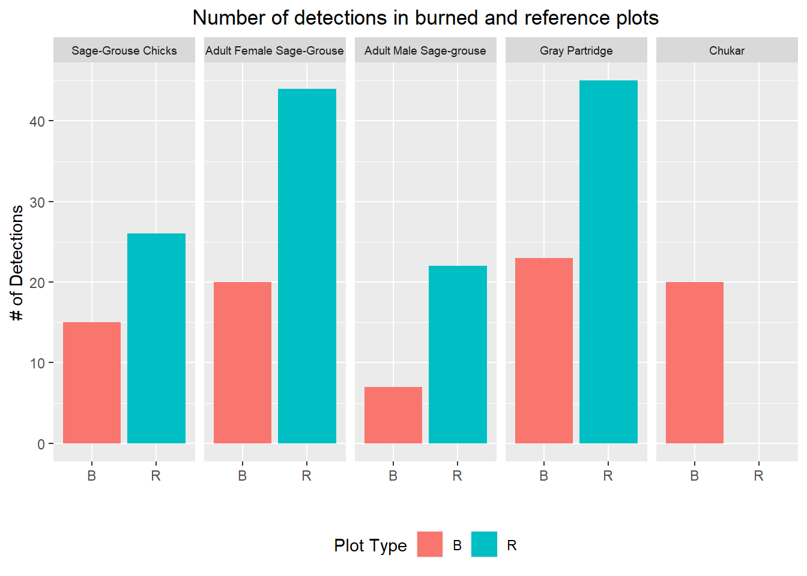
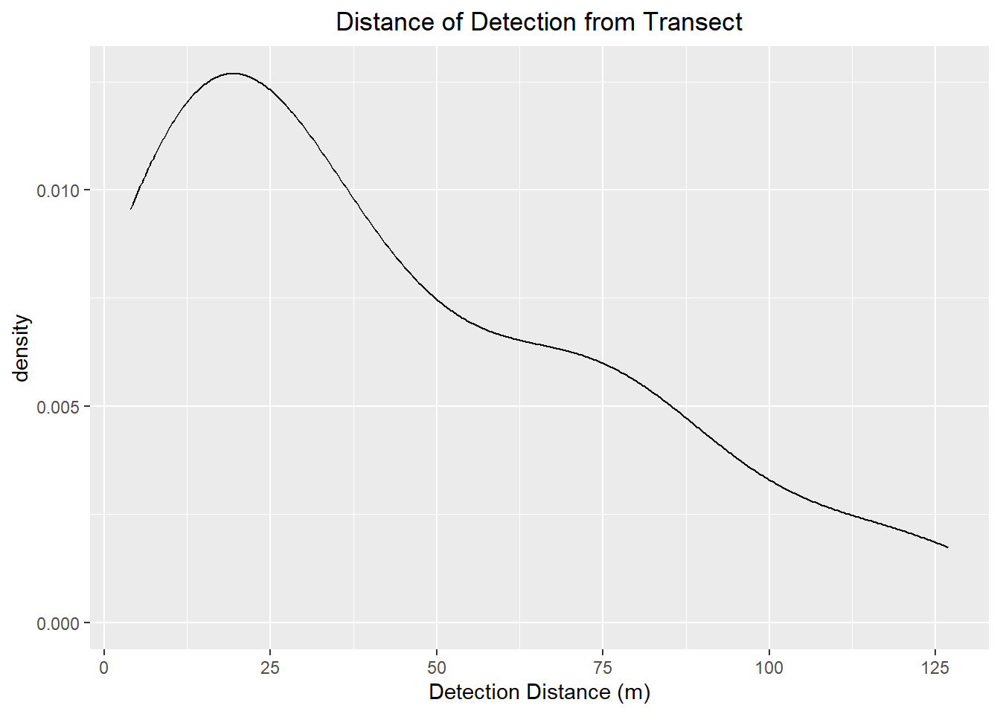
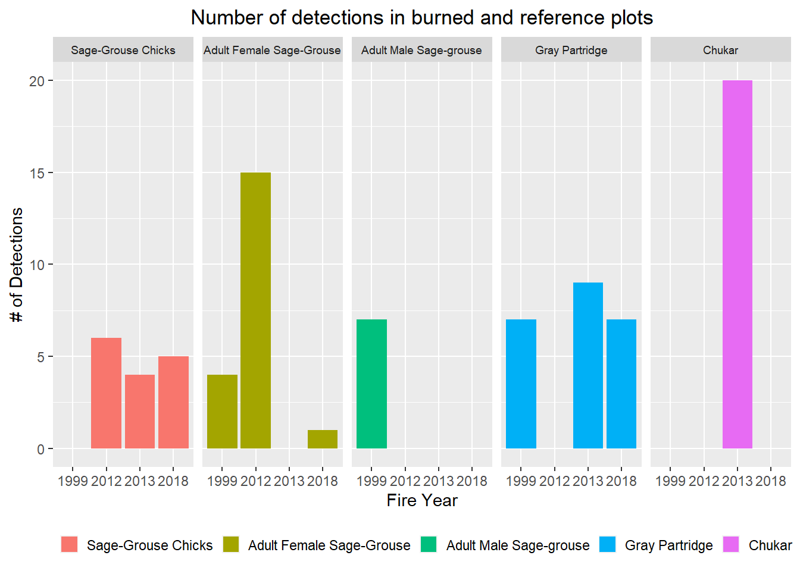
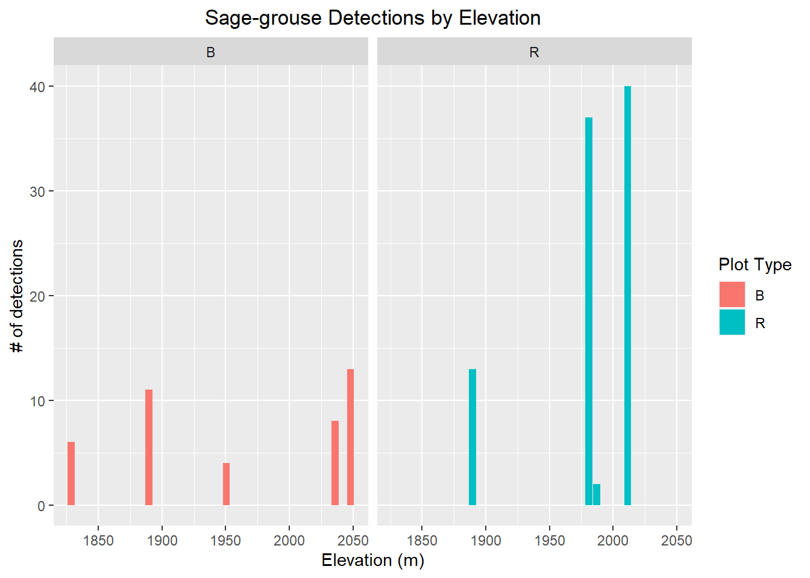

Chapter 2 Data Wrangling and Visualization of Dog Transects
In this chapter, I am going to wrangle and visualize my dog transect data. First I need to load the tidyverse, patchwork, and viridis packages for data wrangling and visualization.
#load packages
library(tidyverse)
library(patchwork)
library(viridis)Reminder of the tables we made in chapter 1.
## [1] "dog_transect" "dog_transect_raw" "pellet_count" "pellet_count_raw"
## [5] "sg_fire_plots"2.1 Dog Transect Detections
I am going to start by plotting out the number of sage-grouse, chukar, and gray partridge we detected in burned and reference plots.
dog_transects <- dbGetQuery(sg_db, "SELECT * FROM dog_transect;")
dog_transects %>%
mutate(obs = factor(obs, levels = c("Sage-Grouse Chicks",
"Adult Female Sage-Grouse",
"Adult Male Sage-grouse",
"Gray Partridge",
"Chukar"))) %>%
group_by(obs, type) %>%
mutate(n = as.numeric(n)) %>%
summarize(nsum = sum(n)) %>%
as_tibble() %>%
ggplot(aes(x = type, geom_text(3.00))) +
geom_bar(aes(y=nsum, fill = type), stat = "identity") +
facet_wrap(~obs, nrow = 1) +
labs(x = "", y = "# of Detections", fill = "Plot Type")+
theme(legend.position = "bottom") +
theme(plot.title = element_text(hjust = 0.5)) +
theme(strip.text = element_text(
size = 7))+
ggtitle("Number of detections in burned and reference plots") 
2.2 Detection Distance
This is a plot of distance of the detection from the transect line.
dog_transects <- dbGetQuery(sg_db, "SELECT * FROM dog_transect;")
dog_transects %>%
mutate(dist = as.numeric(dist)) %>%
ggplot(aes(x = dist)) +
geom_density() +
theme(plot.title = element_text(hjust = 0.5)) +
ggtitle("Distance of Detection from Transect") +
labs(x = "Detection Distance (m)") It looks like our detections peak around 20 m and fall from there.
2.3 Detections by Fire Year
Let’s look at detections in burned plots by year burned.
dog_transects <- dbGetQuery(sg_db, "SELECT * FROM dog_transect;")
dog_transects %>%
mutate(obs = factor(obs, levels = c("Sage-Grouse Chicks",
"Adult Female Sage-Grouse",
"Adult Male Sage-grouse",
"Gray Partridge",
"Chukar"))) %>%
group_by(obs, fire_year) %>%
mutate(n = as.numeric(n)) %>%
filter(!is.na(fire_year)) %>%
summarize(nsum = sum(n)) %>%
as_tibble() %>%
ggplot(aes(x = fire_year)) +
geom_bar(aes(y=nsum, fill = obs), stat = "identity") +
facet_wrap(~obs, nrow = 1) +
labs(x = "Fire Year", y = "# of Detections", fill = "")+
theme(legend.position = "bottom") +
theme(plot.title = element_text(hjust = 0.5)) +
theme(strip.text = element_text(
size = 7))+
ggtitle("Number of detections in burned and reference plots") +
theme(legend.key.size = unit(.4, 'cm')) No clear pattern is emerging.
2.4 Detections of sage-grouse by elevation
Let’s visualize sage-grouse detections by elevation.
dog_transects <- dbGetQuery(sg_db, "SELECT * FROM dog_transect;")
dog_transects %>%
mutate(obs = factor(obs, levels = c("Sage-Grouse Chicks",
"Adult Female Sage-Grouse",
"Adult Male Sage-grouse"))) %>%
filter(!is.na(obs)) %>%
mutate(n = as.numeric(n)) %>%
mutate(elevation = as.numeric(elevation)) %>%
mutate(elevation = (elevation/3.281)) %>%
group_by(type, elevation) %>%
summarize(nsum = sum(n)) %>%
ggplot(aes(x = elevation)) +
geom_bar(aes(y=nsum, fill = type), stat = "identity" ) +
facet_wrap(~type)+
theme(plot.title = element_text(hjust = 0.5)) +
ggtitle("Sage-grouse Detections by Elevation") +
labs(x = "Elevation (m)", y = "# of detections", fill = "Plot Type") No clear pattern is emerging.